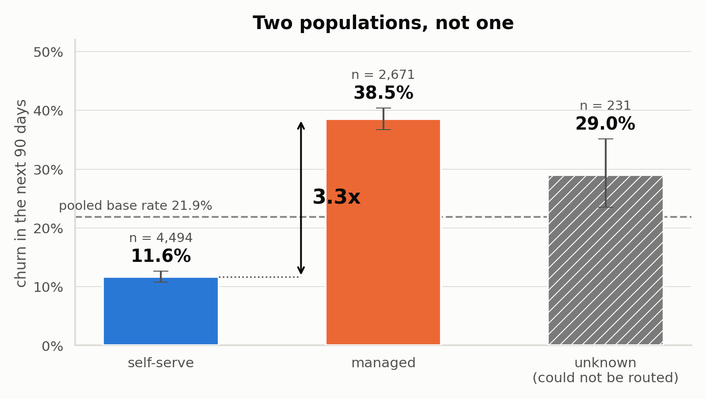
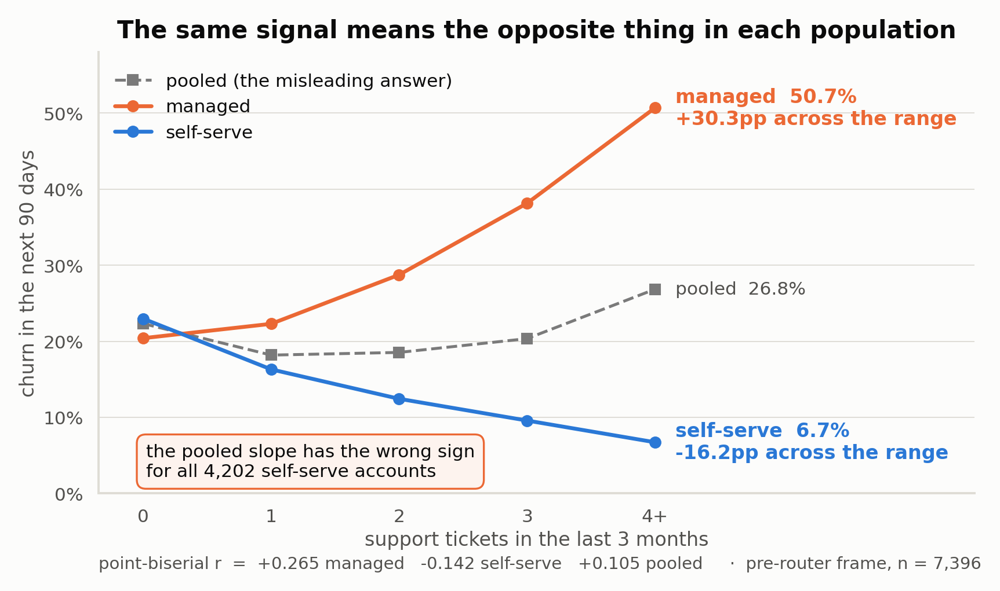
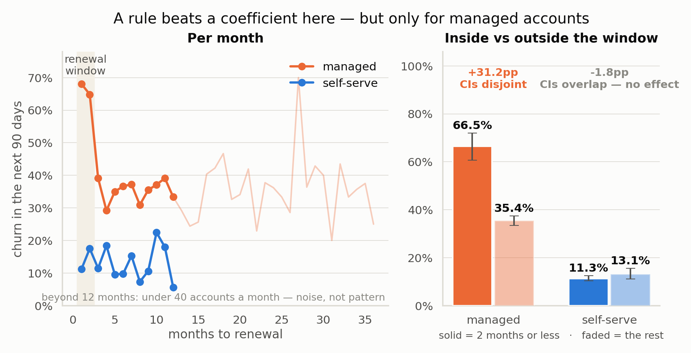
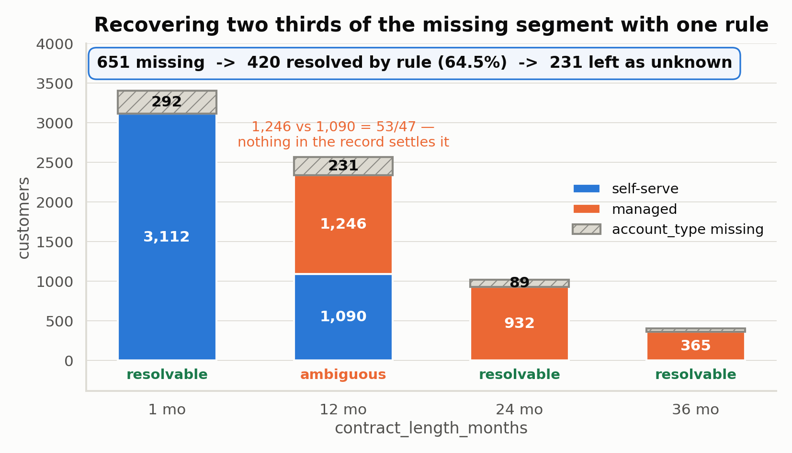
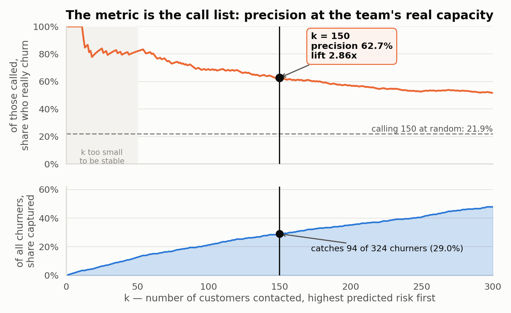
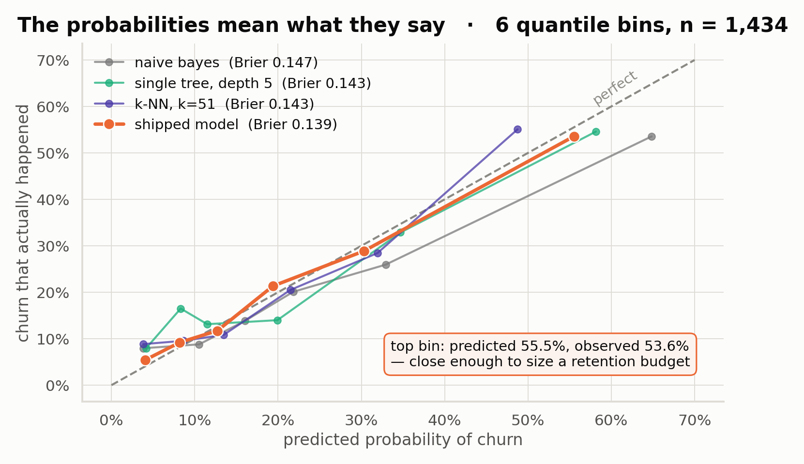
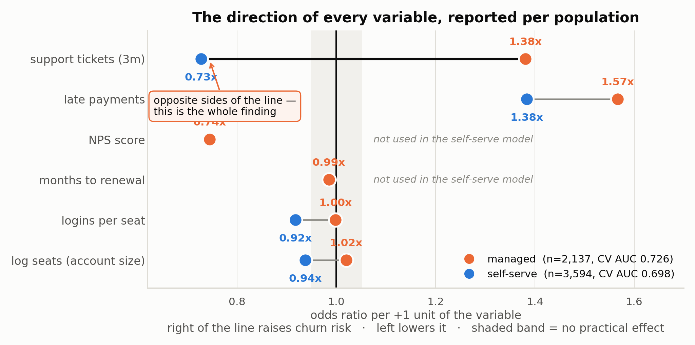
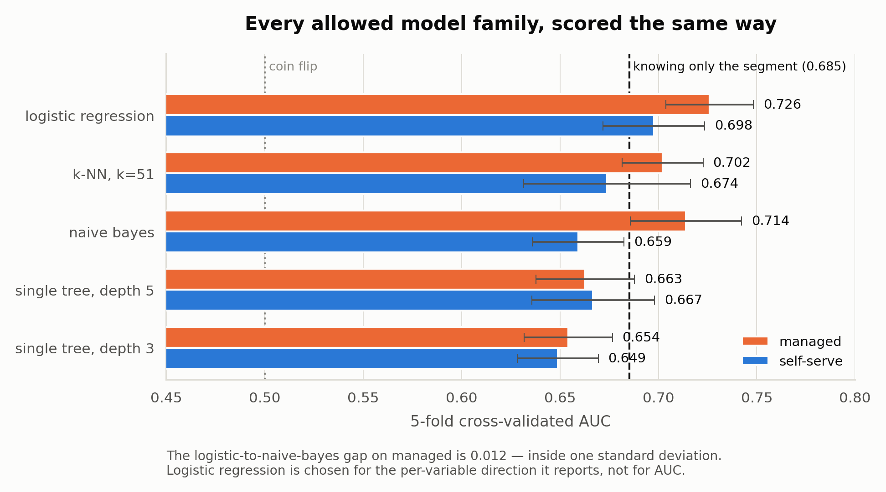

The "unknown" segment isn't a real model
0.535 CV AUC at n=185; the strongest available penalty shrinks every coefficient near zero. It returns roughly the base rate. Honest, but not prediction — flagged as such rather than dressed up.
A freelance engagement sourced through Upwork — client name withheld under NDA: predict 90-day churn for a SaaS product, from a 30 June 2026 snapshot — with one hard constraint. The retention team needed to know why a customer was flagged, not just that they were, so the brief ruled out anything that isn't inspectable: no tree ensembles, no neural nets, no black-box AutoML.
The real finding wasn't a model. It was that the customer base is two populations that respond to the same signal in opposite directions — and reporting one global number for either would have sent the retention team after the wrong accounts.
The client runs a SaaS product with both self-serve and managed accounts, and wanted a 90-day churn score for every customer on the book as of a 30 June 2026 snapshot — 1,642 customers to score, drawn from a larger 7,396-row historical file used for training.
The constraint shaped everything that followed: only interpretable model families were on the table — logistic regression and other linear models, a single decision tree capped at depth 5, naive Bayes, k-NN, and explicit business rules, alone or combined. No random forests, no gradient boosting, no neural nets, nothing an account manager couldn't be given a plain-language reason from. That rule is why the project turned into an exploration exercise rather than a modeling one — with an interpretability ceiling, the only way to raise performance is to understand the population well enough that the routing does the work the model can't.
My role. End to end: data audit, cleaning, feature design, three routed models, and the retention recommendation that used them. Every number below is produced by a script in the delivered repository and is reproducible from the raw file. Client identity is withheld per our NDA — the analysis and figures are unaltered.
Managed accounts churn 3.3x more often than self-serve — 38.5% against 11.6%, with Wilson 95% intervals that don't come close to touching (managed [36.7%, 40.4%], self-serve [10.7%, 12.6%]). A two-sample KS test separates the groups on 6 of 8 numeric columns at p < 0.0001. Pooling them into one model hides everything that follows.

More support tickets means a managed account in trouble — and a self-serve account that's engaged. Managed churn climbs from 20.4% to 50.7% as tickets rise (+30.3pp); self-serve falls from 23.0% to 6.7% (−16.2pp). Pooled, the two effects cancel into a mild upward slope of +0.105 — a sign that's wrong for all 4,202 self-serve accounts in the file. This is Simpson's paradox, and it's the finding the whole solution is built around: of ten candidate variables screened the same way, exactly one points the same direction in both groups.

Screening all columns rather than eyeballing them caught one that's bijective with the target and one that looks predictive but isn't:
| Column | Evidence | Decision |
|---|---|---|
| cancellation date | AUC of presence alone = 1.0000. Every non-null date falls after the snapshot — it's a record of the outcome, not a predictor of it. | Dropped. Nothing derived from it. |
| contract length (months) | +0.250 correlation pooled — the strongest in the file — but +0.003 and +0.026 within each segment. It carries almost no effect; it just labels which population a row belongs to. | Kept as the routing rule only, never as a model input. |
The second one is the trap: a variable that would have looked like the best predictor in the file to anyone who ran a correlation matrix without segmenting first.
Inside the two-month renewal window, managed churn jumps to 66.5% (n=269) against 35.4% outside it (n=2,274) — a 31.2-point gap with disjoint confidence intervals. Self-serve shows no effect at all: 11.3% vs 13.1%, intervals overlapping. Pooled, this looks like a global 46.3% spike at month 2. It isn't — it's a managed-only rule, and reporting it globally would send a retention team after the wrong list.

The segment field itself was missing for 9% of rows, concentrated entirely in one source system. Contract length turned out to be deterministic at three of its four values — no managed account has ever had a 1-month contract, no self-serve account a 24- or 36-month one — which recovered 420 of 651 missing segments (64.5%) with zero counter-examples across 7,396 rows.

Each row is cleaned, the leak is dropped, and the row is routed — on account type if present, on contract length if not, otherwise into an honestly-scored "unknown" segment. That segment's own logistic regression, fit on that segment's own feature list, scores the row. No ensembling, no voting: one row, one model, one probability.
| Segment | n (train) | Features | CV AUC |
|---|---|---|---|
| Managed | 2,137 | 6 | 0.726 |
| Self-serve | 3,594 | 4 | 0.698 |
| Unknown | 185 | 4 | 0.535 |
Regularization strength is itself a finding: managed lands on a strong penalty because its six features are informative and correlated; unknown, with only 185 rows, shrinks every coefficient below 0.016 — the model honestly saying it has nothing to work with rather than fitting noise. Runtime came in well inside a CPU-only, sub-millisecond budget: the full artifact is 2.4 KB and the pipeline rebuilds from raw data in under 20 seconds.
The retention team can make about 150 calls. So the metric that matters isn't AUC — it's: of those 150, how many really churn?

AUC is reported as a secondary number: it integrates over every threshold, including ones the team will never operate at. I also decomposed it honestly — knowing only which segment a customer is in gets 0.685 AUC on its own; the full routed model reaches 0.760. So the model adds roughly 0.075 AUC over segment membership alone, and that's the number I'd stand behind if asked what the modeling actually contributed.

This is the table the client actually needed. A single global odds ratio would have been actively wrong for one of the two segments on the single strongest signal in the file.

| Variable | Managed | Self-serve | Reading |
|---|---|---|---|
| Support tickets (3m) | 1.38x ↑ | 0.73x ↓ | Opposite. Trouble signal in managed, engagement signal in self-serve. |
| Late payments | 1.57x ↑ | 1.38x ↑ | Same direction in both — the only signal safe to state company-wide. |
| NPS score | 0.75x ↓ | not used | Managed only; flat in self-serve (r = −0.009). |
| Logins per seat | 1.00x — | 0.92x ↓ | Self-serve only: engagement per seat protects against churn. |
| Account size (log seats) | 1.02x ↑ | 0.94x ↓ | Weak and opposite — real, but too small to act on. |
All five interpretable families were benchmarked on identical folds and features. Logistic regression led on both segments (0.726 / 0.698), but the margin over naive Bayes on managed was inside one standard deviation — AUC alone didn't settle it. Three things did: best calibration (Brier 0.139 vs. 0.143–0.147), the smallest artifact by two orders of magnitude (2.4 KB vs. k-NN's 546 KB, which stores the training set and grows with it), and the only family that reports a signed, per-variable direction — which is exactly what the effect-direction table above required. A depth-5 decision tree would have split on ticket count in both segments and never surfaced that the sign flips.

Who to call. The top 150 by predicted probability — in practice almost entirely managed accounts carrying open tickets and late payments, low NPS, many inside the two-month renewal window.
Who not to call. Two groups. The "unknown"-segment rows score at 0.535 AUC — close to random — so they go to engineering as a data-quality fix on the source system that drops the segment field, not a call list. And small self-serve accounts whose monthly fee sits below the cost of a retention call, regardless of predicted risk.
How to measure it. Not by comparing the called group's churn against the rest — that comparison is confounded by construction. Instead: take the top 300 by predicted probability, randomly assign 150 to be called and 150 held back, stratified by segment and risk decile, and measure the churn difference between arms.
Stated honestly up front: at a ~67% control-arm churn rate and n=150 per arm, the minimum detectable effect is about 15 percentage points. One quarter of results can't prove the program saved ten customers — either accept a two-to-three quarter read, or widen the holdback.
0.535 CV AUC at n=185; the strongest available penalty shrinks every coefficient near zero. It returns roughly the base rate. Honest, but not prediction — flagged as such rather than dressed up.
Segment medians for four columns were computed on the full frame, so the held-out numbers are mildly optimistic. Recorded as a flag rather than quietly fixed, since it's what produced the delivered predictions.
The C search ran inside a standardization pipeline; the shipped models are fit on raw columns. The direction and rank of every coefficient are unaffected, but the self-serve C value isn't exactly what was validated.
Refit C without the scaler mismatch; move imputation inside the cross-validation folds and re-measure; bootstrap a confidence interval on precision@150 instead of quoting a single point estimate; test one self-serve-specific interaction (new account × onboarding incomplete) — the one hypothesis its weaker within-group AUC is visibly missing.
What I wouldn't spend the two hours on: chasing AUC. Once the population structure is understood, the model class stops being where the remaining signal lives.
Handed a model-family constraint that most people treat as a handicap, I treated it as the spec: find the structure that makes a simple model correct, instead of reaching for a complex one that papers over not having found it. The population split and the direction reversal are the deliverable — the three logistic regressions are just where that understanding ends up living.
More of my work — RAG platforms, multi-agent systems, and production AI backends.
Back to portfolio